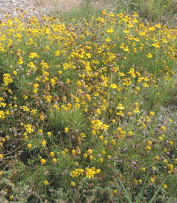

Previous || Next || Return to Mystery Plants || USC Herbarium
This Week's Mystery Plant | Dr. John B. Nelson Curator, USC Herbarium |
|
This one loves a rocky pasture. Horses and cows tend to avoid it, so the plants can go crazy, without too much danger of being munched on. The plants have a bitter or acrid taste, so it makes sense that livestock don't care for it very much. In fact, some say that cows which have eaten this plant will produce bitter milk. (You can try chewing on this plant to see what it tastes like…but beware: it IS slightly toxic!) The leaves are narrow, thin and needle-like. They are fragrant, when crushed, in a sort of camphor-like way, but many people will say that they are just plain stinky. As the plants get older (and taller), they tend to lose their lower leaves, which may remain attached to the stem for a while, turning brown. Perhaps this species makes up for its bitterness by being beautiful. When in full bloom and in large patches, the plants make a spectacular show. Of course, this is another member of the sunflower family, and up close, you can see the arrangement of tiny flowers, congested into heads at the ends of the branches. A single head will have several dozen inconspicuous yellow disk flowers on a rounded receptacle, something like a tiny tennis ball. Eight or nine bright yellow, showy ray flowers form a ring around the outside of the head. These rays are notched, or lobed, on their ends. The plants can get as tall as 2' or so, although sometimes they will bloom when just a few inches high, especially if growing in rough terrain. This species is native to the Southeast, and extends north to New England, and west through Missouri and Texas. In South Carolina, it occurs in every county, but is most common in the Coastal Plain and Piedmont. It doesn't always grow in pastures. You can see it commonly growing as a weed in fields, or along roadsides and parking lots. It is a real survivor, and can grow in any sandy or gravelly place, blooming like mad during the hottest and driest parts of the summer. It would probably look great on a patio, grown in pots. Has anyone ever tried it? |
 Photo by Linda Lee |